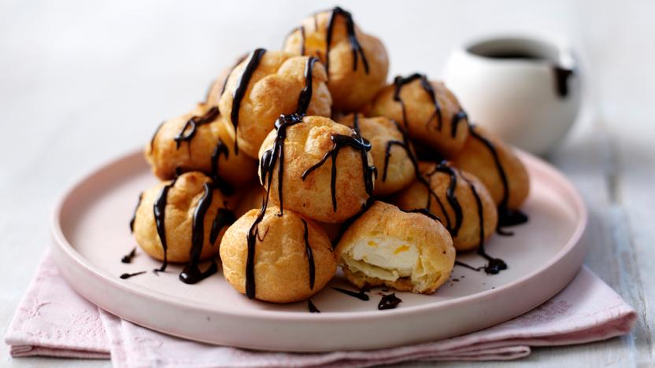

These chocolate-covered puff pastries are filled with either whipped cream, custard, pastry cream, or vanilla ice cream. Many theories exist about the origin of this dessert, but the most likely one traces it back to the 13th century, when the chefs who first created the puff pastry in France and southern Germany began filling them with savory cheese mixtures and herbs.
Meal prep time : 1 hour 10 minutes
Servings : 48